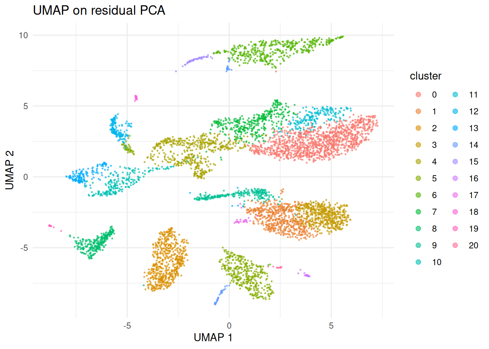

Pearson residuals and scTransform
2026-09-24
Intro
bixverse normalises once, at ingestion. Counts go in, log1p(count / lib_size * target_size) comes out, and both layers sit on disk from then on. Every downstream step reads that second layer. It’s cheap, it streams, and it is why a million cells fit on a laptop.
It also has a known problem. Library-size normalisation followed by a log assumes the variance of a gene is roughly constant once you’ve divided the depth out. For UMI counts that isn’t true. Highly expressed genes carry more variance than lowly expressed ones no matter what you divide by, so a variance-based HVG ranking partly ranks genes by how much they were expressed in the first place.
Pearson residuals fix this by asking a different question. Fit a null model of what a gene’s counts should look like given only sequencing depth, then ask how far each cell deviates from it:
A gene that is nothing but depth gets residuals with variance near one. A gene with real structure gets more. As an HVG statistic that holds up well. As a PCA input it’s more contested, and the caveats section goes through what the benchmarks actually say.
The catch is cost. Nothing about this is precomputable: a residual depends on the fitted model, so it has to be regenerated every time something wants it. Worse, a residual is non-zero even where the count is zero, so the matrix is dense by construction. That is exactly the trade-off the design vignette warns about, and it’s why this is opt-in rather than the default.
bixverse gives you two flavours.
scTransform v2 (Choudhary and Satija, 2022) fits a negative binomial per gene by regression against log depth, then regularises the per-gene parameters against their expression level with a kernel smoother. Only a bounded subsample (2000 genes by 2000 cells by default) goes through the actual GLM fitting, so the expensive part doesn’t scale with your data set. Everything after it streams.
Analytic Pearson residuals (Lause, Berens and Kobak, 2021) skip the fitting entirely. One shared dispersion for every gene, and from the marginals: . Closed form, no iterations, and their paper argues it ranks genes about as well as the fitted version does.
Analytic Pearson is the one to reach for first. It’s a couple of orders of magnitude cheaper and you can always refit with scTransform if you need corrected counts or per-gene dispersions.
Loading the data
Two PBMC runs, so there’s something to group over later.
Code
dir_data <- download_pbmc_batches()
tempdir_resid <- file.path(tempdir(), "residuals_bixverse")
dir.create(tempdir_resid, showWarnings = FALSE, recursive = TRUE)
h5ad_files <- list.files(dir_data)
h5ad_files <- h5ad_files[grepl(".h5ad", h5ad_files)]
h5ad_paths <- file.path(dir_data, h5ad_files)
names(h5ad_paths) <- c("pbmc3k", "pbmc4k")
h5_tasks <- prescan_h5ad_files(h5_paths = h5ad_paths)
sc_object <- SingleCells(dir_data = tempdir_resid)
sc_object <- load_multi_h5ad(
object = sc_object,
prescan_result = h5_tasks,
.verbose = FALSE
)Standard QC before anything else. A residual model fitted on debris is a model of debris.
Code
var <- get_sc_var(sc_object)
h5_metadata <- read_h5ad_metadata(h5ad_paths[[1]])
var <- merge(
var,
h5_metadata$var[, c("ENSEMBL_ID", "Symbol_TENx")],
by.x = "gene_id",
by.y = "ENSEMBL_ID"
)
setnames(var, old = "Symbol_TENx", new = "gene_symbol", skip_absent = TRUE)
gs_of_interest <- list(
MT = var[grepl("^MT-", gene_symbol), gene_id],
Ribo = var[grepl("^RPS|^RPL", gene_symbol), gene_id]
)
sc_object <- gene_set_proportions_sc(
sc_object,
gs_of_interest,
streaming = FALSE,
.verbose = FALSE
)
qc_df <- sc_object[[c("cell_id", "lib_size", "nnz", "MT")]]
qc <- run_cell_qc(
metrics = list(
log10_lib_size = log10(qc_df$lib_size),
log10_nnz = log10(qc_df$nnz),
MT = qc_df$MT
),
cells_to_keep = get_cells_to_keep(sc_object),
directions = c(
log10_lib_size = "twosided",
log10_nnz = "twosided",
MT = "above"
),
threshold = 3
)
sc_object[["outlier"]] <- qc$combined
sc_object <- set_cells_to_keep(sc_object, qc_df[!qc$combined, cell_id])
sc_object
#> Single cell experiment (Single Cells).
#> No cells (original): 7040
#> To keep n: 5841
#> No genes: 13925
#> HVG calculated: FALSE
#> PCA calculated: FALSE
#> Other embeddings: none
#> KNN generated: FALSE
#> SNN generated: FALSE
#> MAGIC imputed: none
#> Residual model: none
#> Stale artefacts: noneFitting a model
fit_residuals_sc() fits and caches. It doesn’t transform anything, and it doesn’t touch the counts on disk. What lands on the object is the model.
sc_object <- fit_residuals_sc(
object = sc_object,
method = "analytic_pearson",
.verbose = TRUE
)
#> Fitting analytic_pearson over 5_841 cells.
#> Fitted 1 model(s) over 13_879 genes.
get_residual_fit(sc_object)
#> Fitted residual model: analytic Pearson
#> 1 group over 5_841 cells
#> 13_879 genes modelled in every groupThe fit is keyed to the cells it saw. Move the filter afterwards and anything that tries to use it errors rather than quietly applying coefficients to the wrong cells. The usual cache-status machinery knows about it too:
get_sc_cache_status(sc_object)
#> modality artefact name stamped stale reason id from
#> <char> <char> <char> <lgcl> <lgcl> <char> <char> <list>
#> 1: rna residuals <NA> TRUE FALSE <NA> 39148c4958f6bab8Variable features
find_hvg_sc() gains a "residual" method. It ranks on the residual variance of the cached model instead of on the stored layer.
sc_object <- find_hvg_sc(
object = sc_object,
hvg_no = 2000L,
hvg_params = params_sc_hvg(method = "residual"),
.verbose = TRUE
)
length(get_hvg(sc_object))
#> [1] 2000The per-gene statistic lands in the variable table as residual_variance. Genes the model didn’t retain come back NA rather than zero, which matters: zero would read as a real measurement of no variance.
var_dt <- get_sc_var(sc_object)
ggplot(
var_dt[!is.na(residual_variance)],
aes(x = log10(residual_variance))
) +
geom_histogram(bins = 80, fill = "#2f6f9f", colour = NA) +
geom_vline(xintercept = 0, linetype = "dashed", colour = "grey30") +
labs(
title = "Residual variance",
subtitle = "Dashed line is variance = 1, where a depth-only gene sits",
x = "log10(residual variance)",
y = "Genes"
) +
theme_minimal()
That bulk piled up around one is the null doing its job. The tail to the right is what you actually want to cluster on.
Worth comparing against what the default ranking picks:
hvg_residual <- get_hvg(sc_object)
sc_vst <- find_hvg_sc(
object = sc_object,
hvg_no = 2000L,
hvg_params = params_sc_hvg(method = "vst"),
.verbose = FALSE
)
hvg_vst <- get_hvg(sc_vst)
sprintf(
"%i of 2000 genes shared (%.0f%%)",
length(intersect(hvg_residual, hvg_vst)),
100 * length(intersect(hvg_residual, hvg_vst)) / 2000
)
#> [1] "1560 of 2000 genes shared (78%)"Substantial overlap, and the disagreement is the interesting part. The residual ranking tends to favour lower-expressed markers that a variance ranking buries under housekeeping genes.
PCA on residuals
calculate_pca_sc() takes residuals = TRUE. Two settings have to change, and the function will tell you so rather than silently working around you:
calculate_pca_sc(
object = sc_object,
no_pcs = 30L,
residuals = TRUE,
.verbose = FALSE
)
#> Error in `.assert_residual_pca_params()`:
#> ! Residual PCA cannot normalise the variance: the residuals already carry the biological signal as variance, and scaling it away is the one thing the transform exists to avoid. Pass params_sc_pca(normalise_variance = FALSE).Variance normalisation is on by default, and on this path it would flatten the exact ranking the transform produces. The PFlogPF transform belongs to the normalised layer and has nothing to say about residuals. Both are refused rather than overridden, because they’re settings you passed and quietly changing them would make the recorded parameters a lie.
sc_object <- calculate_pca_sc(
object = sc_object,
no_pcs = 30L,
pca_params = params_sc_pca(normalise_variance = FALSE),
residuals = TRUE,
.verbose = TRUE
)
#> Using dense SVD on analytic_pearson residuals for 2000 genes.
dim(get_pca_factors(sc_object))
#> [1] 5841 30From here it’s the normal pipeline. Neighbours, clusters, embeddings, none of them know or care where the PCA came from.
sc_object <- find_neighbours_sc(sc_object, .verbose = FALSE)
sc_object <- find_clusters_sc(sc_object, res = 0.8, name = "residual_clusters")
sc_object <- umap_sc(sc_object, .verbose = FALSE)
umap_dt <- data.table(
get_embedding(sc_object, "umap"),
cluster = factor(unlist(sc_object[["residual_clusters"]])),
batch = unlist(sc_object[["exp_id"]])
)
setnames(umap_dt, c("umap_1", "umap_2", "cluster", "batch"))
ggplot(umap_dt, aes(x = umap_1, y = umap_2, colour = cluster)) +
geom_point(size = 0.3, alpha = 0.6) +
labs(title = "UMAP on residual PCA", x = "UMAP 1", y = "UMAP 2") +
theme_minimal() +
guides(colour = guide_legend(override.aes = list(size = 2)))
What it costs
The residual path has no sparse solver and no streaming solver. A residual column is dense even where the counts are not, because a zero count still has a residual of -mu / sqrt(var). So the PCA input is a real cells by genes dense matrix, and calculate_pca_sc() warns once it gets past a few gigabytes.
Two knobs if that bites: fewer HVGs, or fewer cells. There’s no third option, and sparse_svd = TRUE errors rather than silently running the log-normalised algorithm instead.
Multi-sample fits
Fitting one model across several samples folds their depth differences into the gene coefficients. group_column fits one model per group instead, which is what Seurat v5 does with split layers.
sc_grouped <- fit_residuals_sc(
object = sc_object,
method = "analytic_pearson",
group_column = "exp_id",
.verbose = TRUE
)
#> Fitting analytic_pearson over 5_841 cells in 2 groups.
#> Fitted 2 model(s) over 11_990 genes.
get_residual_fit(sc_grouped)
#> Fitted residual model: analytic Pearson
#> 2 groups over 5_841 cells
#> 11_990 genes modelled in every group
#> grouped by: exp_idThe gene axis narrows to the intersection: a gene one sample filtered out is not modelled anywhere, because there’d be no coefficients to apply to that sample’s cells.
Grouping also changes what hvg_no means. Seurat’s rule is to rank within each sample, take the top N of each, then union them, so a marker that only one sample carries doesn’t get buried by a pooled ranking. The result is therefore usually more than hvg_no genes:
sc_grouped <- find_hvg_sc(
object = sc_grouped,
hvg_no = 2000L,
hvg_params = params_sc_hvg(method = "residual"),
.verbose = TRUE
)
#> Selected 3395 variable features: the union of the top 2000 of each of 2 groups.
length(get_hvg(sc_grouped))
#> [1] 3395bixverse doesn’t trim that back to 2000. Trimming would undo the per-sample ranking, which is the only reason to do the union in the first place.
One thing this is not: batch correction. Per-sample models remove the sample-level depth differences, not the batch effect. If the batches still don’t mix, you want the batch correction vignette.
Covariates
scTransform can take extra cell-level covariates into the design. Library size is never one of them: it enters as a fixed offset with the slope pinned, which is the change that separates v2 from v1.
sc_cov <- fit_residuals_sc(
object = sc_object,
method = "sctransform",
covariate_columns = "MT",
.verbose = TRUE
)
#> Fitting sctransform over 5_841 cells.
#> Fitted 1 model(s) over 13_879 genes.
fit <- get_residual_fit(sc_cov)
fit$covariate_names
#> [1] "MT"
fit$models[[1]]$n_coef
#> [1] 2Two coefficients: the intercept and the one covariate.
Column order is remembered and checked on every later use. Hand the model a reordered set and it errors instead of applying each coefficient to the wrong column, which would give you plausible-looking residuals and a wrong embedding.
Numeric and integer columns only. A factor needs dummy coding, and bixverse refuses to guess a contrast for you rather than silently changing the rank of the design matrix.
Corrected counts
Residuals are a modelling device. They are not counts, they go negative, and nothing downstream that expects counts will take them. sct_corrected_counts_sc() reverses the transform with every latent variable held at its median, which removes the depth structure while keeping the per-sample intercept.
sc_sct <- fit_residuals_sc(sc_object, method = "sctransform", .verbose = TRUE)
#> Fitting sctransform over 5_841 cells.
#> Fitted 1 model(s) over 13_879 genes.
corrected <- sct_corrected_counts_sc(
object = sc_sct,
dir_out = file.path(tempdir(), "pbmc_corrected"),
.verbose = TRUE
)
#> Building the cell-major companion store.
#> Corrected store: 5841 cells by 13879 genes in /tmp/RtmplPDQIL/pbmc_corrected.
corrected
#> Single cell experiment (Single Cells).
#> No cells (original): 5841
#> To keep n: 5841
#> No genes: 13879
#> HVG calculated: FALSE
#> PCA calculated: FALSE
#> Other embeddings: none
#> KNN generated: FALSE
#> SNN generated: FALSE
#> MAGIC imputed: none
#> Residual model: none
#> Stale artefacts: noneThat comes back as a proper SingleCells, not a loose file. Behind the scenes the gene-major store gets written, transposed into its cell-major twin, and given a fresh database.
Two things to know about it. It’s scTransform only, since the analytic Pearson model has no corrected-count equivalent. And its gene axis is the model’s, so it is narrower than the source and the indices do not line up. The variable table is rebuilt from the genes that survived rather than copied across, so gene names are right; raw index arithmetic against the original object is not.
What the field actually thinks
Residuals are not a settled win, and it would be dishonest to ship them here without saying so. Three findings are worth knowing before you build an analysis on them.
The transform is not monotonic
This is the sharpest criticism, and it comes from Booeshaghi, Hallgrímsdóttir, Gálvez-Merchán and Pachter. A residual is a signed distance from a per-gene null, so two genes in the same cell can swap places relative to their raw counts. The transform reorders genes within a cell.
That matters more than it sounds. Marker inspection, heatmaps and anything that reads “gene A is higher than gene B in this cell” are answering a question about the transformed values, not about the counts. Their benchmark across 526 data sets found residual and scaling transformations showed exactly these within-cell rank changes, and that sctransform retained substantial depth correlation in many of them, which is awkward for a method whose stated job is removing depth.
Their proposal is PFlogPF, a shifted centred-log-ratio transform that keeps monotonicity. bixverse has it as params_sc_pca(clr = TRUE) on the normal path, and it is a reasonable thing to try before reaching for residuals at all.
The benchmarks are not one-sided
Ahlmann-Eltze and Huber compared delta-method, residual, latent-state and factor-analysis transformations in Nature Methods and found that the plain shifted logarithm followed by PCA performs as well or better than the sophisticated alternatives on simulated and real data. They did single out analytic Pearson residuals as well suited to picking variable genes and finding rare cell types, which is a narrower claim than “use residuals for everything”.
That shape matches what’s implemented here. Using residuals to choose genes and then running the normal pipeline is a defensible middle ground, and find_hvg_sc(hvg_params = params_sc_hvg(method = "residual")) followed by an ordinary calculate_pca_sc() does exactly that.
scTransform v1 was overfitted
Lause, Berens and Kobak showed the original model is overspecified: per-gene overdispersion estimates come out strongly biased, which is why the method needs a post-hoc smoothing step to be usable at all. Their argument is that UMI data don’t need gene-specific overdispersion in the first place.
v2 addresses a good chunk of this by pinning the depth coefficient rather than fitting it, and it is the version implemented here. The regularisation is still doing real work though, and bw_adjust in params_sc_sctransform() is the knob that controls how much.
Scaling
The dense-matrix problem from “What it costs” above is the same one the Pachter paper raises: dense residual output is what makes million-cell analyses awkward, since the whole point of the on-disk sparse format is that you never materialise a matrix that size.
bixverse softens this but does not solve it. The fit and the variance sweep both stream gene by gene, so memory there is one row per worker rather than a genes-by-cells matrix, and the scTransform GLM only ever sees a bounded 2000 by 2000 subsample. Those parts scale fine. The residual PCA does not, because a dense SVD needs a dense input. At a million cells you can still fit a model and select genes on residuals; you cannot run the residual PCA, and calculate_pca_sc() will warn you with the actual number before it tries.
So what should you use
Analytic Pearson for gene selection, then the normal log-normalised PCA, is the combination with the least to argue against it. Full residual PCA is worth trying when you suspect depth is driving your embedding, and worth checking against the default rather than trusting blindly. If you want marker-level interpretability, stay on the normalised layer or use PFlogPF.
Where to go next
Meta cells take all of this too. Their counts are summed UMIs, so the negative binomial still applies, just at far greater depth. Prefer method = "analytic_pearson" there and revisit the n_genes and n_cells defaults of params_sc_sctransform(), which are sized for raw cells and there are usually a lot more of those than there are meta cells.
Still on the list: residual-space projection of new cells onto existing components, which the Rust side can already do but has no R entry point yet.